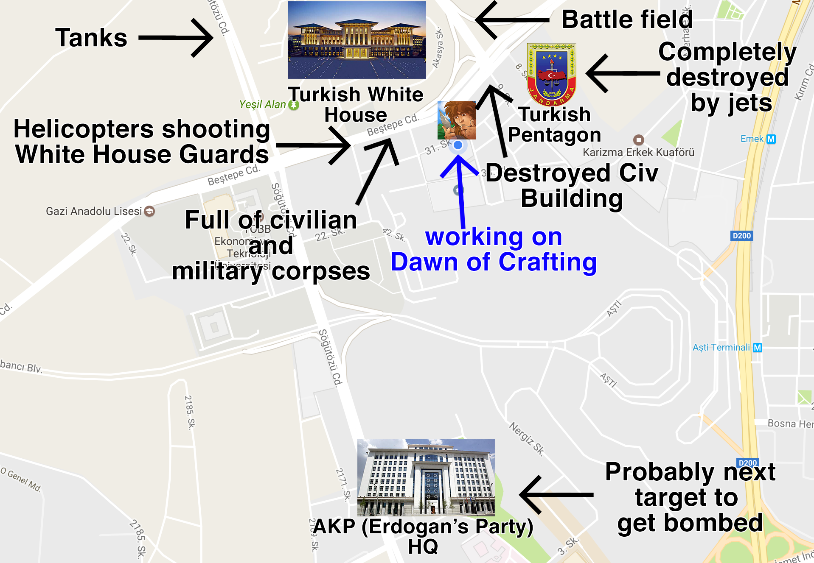

Factsheet
Developer:
Demi and Goku
Based in Ankara, Turkey
Founding date:
Jan 09, 2016
Website:
dawnofcrafting.com
Press / Business Contact:
goku@dawnofcrafting.com
Social:
App Store
Twitter
Facebook
Reddit
Releases:
Dawn Of Crafting
Description
Two brothers making a unique iOS game focused on crafting mechanics.
They were frustrated by all game companies who didn't care much about the crafting mechanics, so they decided to craft a game that did.
They are known to care about their players, their actions, inputs, thoughts and ideas. They develop games with the input of the community. This gives an edge over most other games.
History
Early historyDemi and Goku started working together early in their lives creating mischief as toddlers. They started founding guilds/clans/alliances in competitive games since the age of 8 and 10. Goku became a pro LoL player while at college. At 2012 they started building web and mobile apps.
A Prototype: Crafter GameThey started a small project called Crafter Game at December 2015, which got love pretty fast so they kept working on it. They built a community and changed its name to Dawn of Crafting. Since building such a game would need a lot of development time, they moved back to Turkey from San Francisco where it was economically wiser to develop a game.
Classic Game Development Challenges: Bombs, Terrorists, Coups, DictatorsMoving back to Turkey was economically wiser and physically safer than SF. At least this was the case until they moved back.
During their time in Turkey they dealt with terrorists bombing nearby shopping malls, busses, subways etc. Every week there was government intelligence messages about avoiding certain locations which caused national panic. Every month there was an explosion and many people dying in the hands of the terrorist groups PKK and ISIS. They even lost a friend in these bombings.
While the bombs affected them psychologically, they were physically safe from the attacks because their house was located near secure government buildings. This safety didn’t help when a military coup attempt happened, because this place happened to be the center of the coup.

That night was unforgettable. It happened while they were casually adding new features for version 0.4.6 of Dawn of Crafting. Fighter jets flew lower and lower creating sonic booms which shattered windows, light bulb and mirrors. The jets were shooting down helicopters and tanks literally around the corner. Machine guns firing, tank shooting, buildings getting bombed, jets flying overhead non-stop for 12 hours.
When the coup ended, the government started arresting 90% of the Air Force, including retired people regardless of their involvement in the coup. They interrogated them, beat them and killed some. Demi and Goku’s father was also a retired Air Force pilot. For months there was tension and expectation that the police may raid the house. When they arrest someone, they also seize all electronic devices in the house. No electronics = no game.
They were psychologically wounded and became totally unproductive like the rest of the country. What kept them going was their players, who kept requesting new features. With the help of the Dawn of Crafting community, they were determined to finish this game and make it a success regardless of all obstacles life threw at them.
Projects
Videos
Trailer YouTube
Images


{kind=link}
There are far more images available for Demi and Goku, but these are the ones we felt would be most useful to you. If you have specific requests, please do contact us!
Awards & Recognition
- "#1 Most Liked Incremental Game" - http://incrementalgame.com/
- "#1 Highest Rated Incremental Game" - https://plaza.dsolver.ca/games
Selected Articles
- "Dawn of Crafting continues to be the most underrated game on the App Store."
- Justin Davis, Executive Editor, IGN - "I downloaded Dawn of Crafting and now I want to punch @ErrorJustin in the back of the head. I can't stop playing it."
- Steve Butts, Editor-in-Chief of IGN - "Awesome dev team
Run into an issue? Send 'em a message in game! They respond fairly quickly and *gasp!* actually listen! Phenomenal work guys. I look forward to supporting this game for quite some time."
- JoJoMacXSC, Link - "The developers are keeping it updated and take care of their players!😊
And the best feature I have ever seen is the possibility to actually talk to the developers!!"
- Tridderz, Link - "Amazing game, frequently updated, hours upon hours of fun, would recommend. Kudos to the developers for being so dedicated to creating such a fun game."
- Wwwwwildhero, Link - "I was drawn into this game in the early stages. The devs seem to be working hard to continue to support it. (Thanks guys! I look forward to the updates every week.)
I'm hoping that your imagination never runs out. I would love to see it continue on from using stone to metal. Moving on to potential blacksmithing. Perhaps even getting into some real complex items. This is truly a game where the journey is more fun then the destination. Thank you and keep it up!"
- Chris041768, Link - "Over 50 hours sunk into this game. You won't regret getting this game. You have to use use logic to figure out crafting recipes. Balance the need to eat with the need to craft items. Devs are active on Reddit and constantly update the game based on our ideas. Just get it"
- Soviet63, Link
Additional Links
Company Pictures
Download pictures of us on dropbox.com.
Team & Repeating Collaborators
Demir Berkay Yilmaz
Design, Programming
Goktug Yilmaz
Design, Programming
Contact
Inquiries
goku@dawnofcrafting.com
Twitter
twitter.com/dawnofcrafting
Facebook
facebook.com/dawnofcrafting
presskit() by Rami Ismail (Vlambeer) - also thanks to these fine folks